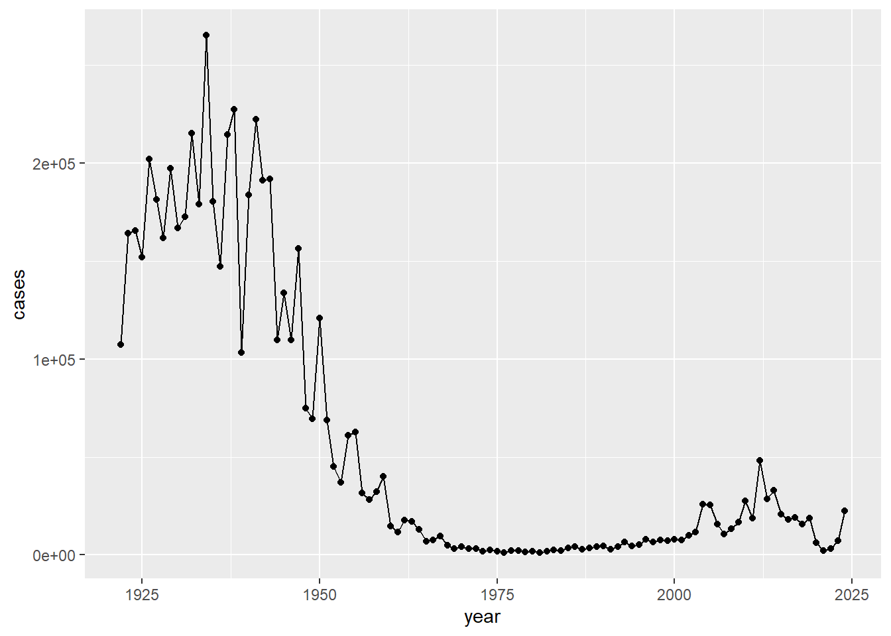
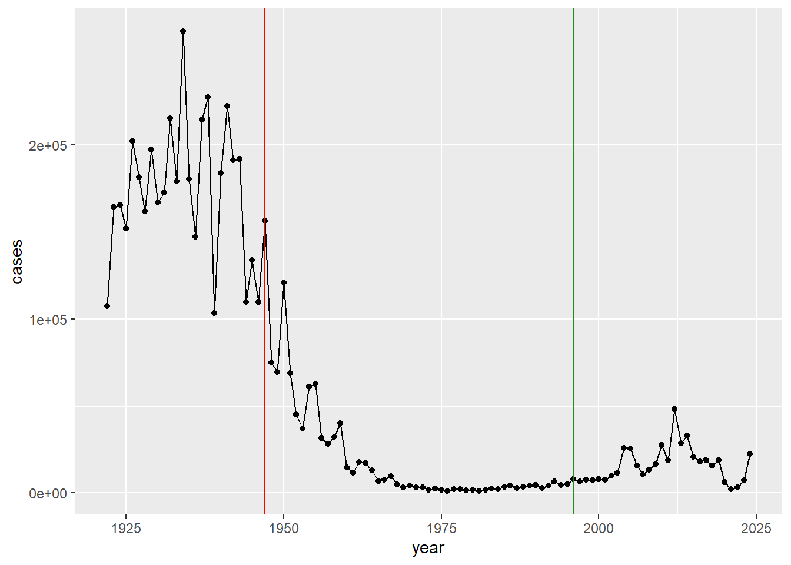
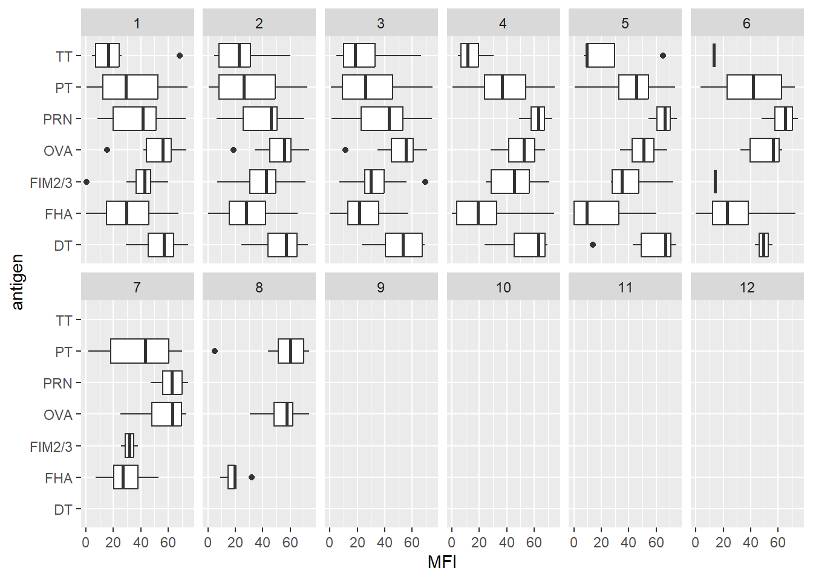
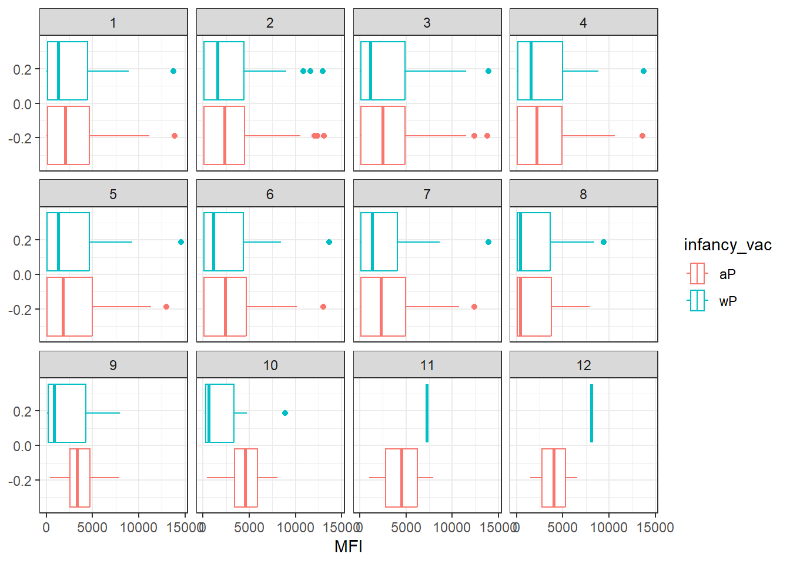
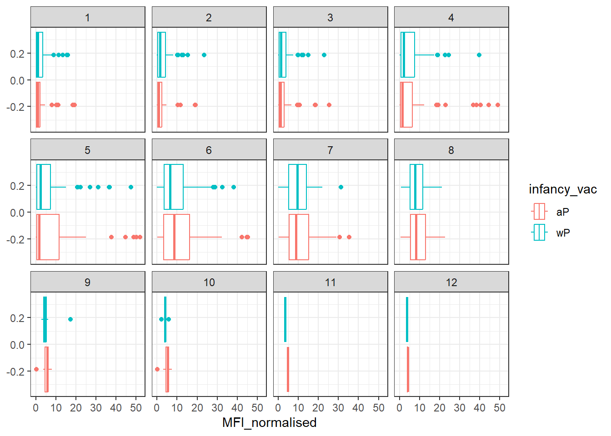

cdc <- data.frame(
year = c(1922L,1923L,1924L,1925L,
1926L,1927L,1928L,1929L,1930L,1931L,
1932L,1933L,1934L,1935L,1936L,
1937L,1938L,1939L,1940L,1941L,1942L,
1943L,1944L,1945L,1946L,1947L,
1948L,1949L,1950L,1951L,1952L,
1953L,1954L,1955L,1956L,1957L,1958L,
1959L,1960L,1961L,1962L,1963L,
1964L,1965L,1966L,1967L,1968L,1969L,
1970L,1971L,1972L,1973L,1974L,
1975L,1976L,1977L,1978L,1979L,1980L,
1981L,1982L,1983L,1984L,1985L,
1986L,1987L,1988L,1989L,1990L,
1991L,1992L,1993L,1994L,1995L,1996L,
1997L,1998L,1999L,2000L,2001L,
2002L,2003L,2004L,2005L,2006L,2007L,
2008L,2009L,2010L,2011L,2012L,
2013L,2014L,2015L,2016L,2017L,2018L,
2019L,2020L,2021L,2022L,2023L, 2024L),
cases = c(107473,164191,165418,152003,
202210,181411,161799,197371,
166914,172559,215343,179135,265269,
180518,147237,214652,227319,103188,
183866,222202,191383,191890,109873,
133792,109860,156517,74715,69479,
120718,68687,45030,37129,60886,
62786,31732,28295,32148,40005,
14809,11468,17749,17135,13005,6799,
7717,9718,4810,3285,4249,3036,
3287,1759,2402,1738,1010,2177,2063,
1623,1730,1248,1895,2463,2276,
3589,4195,2823,3450,4157,4570,
2719,4083,6586,4617,5137,7796,6564,
7405,7298,7867,7580,9771,11647,
25827,25616,15632,10454,13278,
16858,27550,18719,48277,28639,32971,
20762,17972,18975,15609,18617,
6124,2116,3044,7063,22538)
)Class 19 Mini Project
Background
Pertussis is a bacterial lung infection aksi knwn as Whooping Cough. Let’s begin by examining case numbers in the US.
Q1. With the help of the R “addin” package datapasta assign the CDC pertussis case number data to a data frame called cdc and use ggplot to make a plot of cases numbers over time.
Plot your cases per year
library(ggplot2)
ggplot(cdc) +
aes(year,cases) +
geom_point() +
geom_point() +
geom_line()
Q2. Using the ggplot geom_vline() function add lines to your previous plot for the 1946 introduction of the wP vaccine and the 1996 switch to aP vaccine (see example in the hint below). What do you notice?
Add some major milestone time points to our plot:
ggplot(cdc) +
aes(year,cases) +
geom_point() +
geom_point() +
geom_line() +
geom_vline(xintercept = 1947, col = "red")+
geom_vline(xintercept = 1996, col = "forestgreen")
Q3. Describe what happened after the introduction of the aP vaccine? Do you have a possible explanation for the observed trend?
The introduction of mandatory wP (whole-cell) Pertussis immunization in a the mid 1940s lead to a dramatic reduction in case numbers (from over 200,000 to 100s). After the introduction of the acellular pertussis (aP) vaccine in the 1990s, reported pertussis cases in the United States began to rise again after several decades of relatively low incidence under the whole-cell pertussis (wP) vaccine.
The CMI-PB API returns JSON data
The mission of CMI-PB is to provide the scientific community with a comprehensive, high-quality and freely accessible resource of Pertussis booster vaccination. https://www.cmi-pb.org/
They make the data available via JSON format API endpoints - basically the database tables in a key: value type format like “infancy_vac”:“wP”. To read this we can use read_json() function from the jsonlite package. Install with install.packages(“jsonlite”)
library(jsonlite)Warning: package 'jsonlite' was built under R version 4.5.2subject <- read_json("https://www.cmi-pb.org/api/subject", simplifyVector = TRUE)
head(subject) subject_id infancy_vac biological_sex ethnicity race
1 1 wP Female Not Hispanic or Latino White
2 2 wP Female Not Hispanic or Latino White
3 3 wP Female Unknown White
4 4 wP Male Not Hispanic or Latino Asian
5 5 wP Male Not Hispanic or Latino Asian
6 6 wP Female Not Hispanic or Latino White
year_of_birth date_of_boost dataset
1 1986-01-01 2016-09-12 2020_dataset
2 1968-01-01 2019-01-28 2020_dataset
3 1983-01-01 2016-10-10 2020_dataset
4 1988-01-01 2016-08-29 2020_dataset
5 1991-01-01 2016-08-29 2020_dataset
6 1988-01-01 2016-10-10 2020_datasetNumber of subjects
nrow(subject)[1] 172Q4. How many aP and wP infancy vaccinated subjects are in the dataset?
table(subject$infancy_vac)
aP wP
87 85 Q5. How many Male and Female subjects/patients are in the dataset?
table(subject$biological_sex)
Female Male
112 60 Q6. What is the breakdown of race and biological sex (e.g. number of Asian females, White males etc…)?
table(subject$race, subject$biological_sex)
Female Male
American Indian/Alaska Native 0 1
Asian 32 12
Black or African American 2 3
More Than One Race 15 4
Native Hawaiian or Other Pacific Islander 1 1
Unknown or Not Reported 14 7
White 48 32The breakdown is not representative of the US population - this is a serious caveat for this study. However, it is still the largest sample of it’s type ever assembled.
specimen <- read_json("http://cmi-pb.org/api/v5_1/specimen", simplifyVector = TRUE)
ab_titter <- read_json("http://cmi-pb.org/api/v5_1/plasma_ab_titer", simplifyVector = TRUE) We need to join or link these tables with subject table so we can begin to analyze this data and know who to give an AB sample was collected for and when
Q7. Using this approach determine (i) the average age of wP individuals, (ii) the average age of aP individuals; and (iii) are they significantly different?
library(lubridate)
Attaching package: 'lubridate'The following objects are masked from 'package:base':
date, intersect, setdiff, unionsubject$age <- today() - ymd(subject$year_of_birth)library(dplyr)
Attaching package: 'dplyr'The following objects are masked from 'package:stats':
filter, lagThe following objects are masked from 'package:base':
intersect, setdiff, setequal, unionap <- subject %>% filter(infancy_vac == "aP")
round( summary( time_length( ap$age, "years" ) ) ) Min. 1st Qu. Median Mean 3rd Qu. Max.
23 27 28 28 29 35 wp <- subject %>% filter(infancy_vac == "wP")
round(summary(time_length(wp$age, "years"))) Min. 1st Qu. Median Mean 3rd Qu. Max.
23 33 35 37 40 58 Yes. These age distributions do not overlap much (aP ~20s, wP ~30s–50s).
Q8. Determine the age of all individuals at time of boost?
int <- ymd(subject$date_of_boost) - ymd(subject$year_of_birth)
age_at_boost <- time_length(int, "year")
head(age_at_boost)[1] 30.69678 51.07461 33.77413 28.65982 25.65914 28.77481Q9a. With the help of a faceted boxplot or histogram (see below), do you think these two groups are significantly different?
x <- t.test(time_length( wp$age, "years" ),
time_length( ap$age, "years" ))
x$p.value[1] 2.372101e-23Yes there is a clear statistical difference
Q9b. Complete the code to join specimen and subject tables to make a new merged data frame containing all specimen records along with their associated subject details:
meta <- inner_join(subject, specimen)Joining with `by = join_by(subject_id)`head(meta) subject_id infancy_vac biological_sex ethnicity race
1 1 wP Female Not Hispanic or Latino White
2 1 wP Female Not Hispanic or Latino White
3 1 wP Female Not Hispanic or Latino White
4 1 wP Female Not Hispanic or Latino White
5 1 wP Female Not Hispanic or Latino White
6 1 wP Female Not Hispanic or Latino White
year_of_birth date_of_boost dataset age specimen_id
1 1986-01-01 2016-09-12 2020_dataset 14580 days 1
2 1986-01-01 2016-09-12 2020_dataset 14580 days 2
3 1986-01-01 2016-09-12 2020_dataset 14580 days 3
4 1986-01-01 2016-09-12 2020_dataset 14580 days 4
5 1986-01-01 2016-09-12 2020_dataset 14580 days 5
6 1986-01-01 2016-09-12 2020_dataset 14580 days 6
actual_day_relative_to_boost planned_day_relative_to_boost specimen_type
1 -3 0 Blood
2 1 1 Blood
3 3 3 Blood
4 7 7 Blood
5 11 14 Blood
6 32 30 Blood
visit
1 1
2 2
3 3
4 4
5 5
6 6Q10. Now using the same procedure join meta with titer data so we can further analyze this data in terms of time of visit aP/wP, male/female etc.
ab_data <- inner_join(ab_titter, meta)Joining with `by = join_by(specimen_id)`head(ab_data) specimen_id isotype is_antigen_specific antigen MFI MFI_normalised
1 1 IgE FALSE Total 1110.21154 2.493425
2 1 IgE FALSE Total 2708.91616 2.493425
3 1 IgG TRUE PT 68.56614 3.736992
4 1 IgG TRUE PRN 332.12718 2.602350
5 1 IgG TRUE FHA 1887.12263 34.050956
6 1 IgE TRUE ACT 0.10000 1.000000
unit lower_limit_of_detection subject_id infancy_vac biological_sex
1 UG/ML 2.096133 1 wP Female
2 IU/ML 29.170000 1 wP Female
3 IU/ML 0.530000 1 wP Female
4 IU/ML 6.205949 1 wP Female
5 IU/ML 4.679535 1 wP Female
6 IU/ML 2.816431 1 wP Female
ethnicity race year_of_birth date_of_boost dataset
1 Not Hispanic or Latino White 1986-01-01 2016-09-12 2020_dataset
2 Not Hispanic or Latino White 1986-01-01 2016-09-12 2020_dataset
3 Not Hispanic or Latino White 1986-01-01 2016-09-12 2020_dataset
4 Not Hispanic or Latino White 1986-01-01 2016-09-12 2020_dataset
5 Not Hispanic or Latino White 1986-01-01 2016-09-12 2020_dataset
6 Not Hispanic or Latino White 1986-01-01 2016-09-12 2020_dataset
age actual_day_relative_to_boost planned_day_relative_to_boost
1 14580 days -3 0
2 14580 days -3 0
3 14580 days -3 0
4 14580 days -3 0
5 14580 days -3 0
6 14580 days -3 0
specimen_type visit
1 Blood 1
2 Blood 1
3 Blood 1
4 Blood 1
5 Blood 1
6 Blood 1Q11. How many specimens (i.e. entries in abdata) do we have for each isotype?
table(ab_data$isotype)
IgE IgG IgG1 IgG2 IgG3 IgG4
6698 7265 11993 12000 12000 12000 Q12. What are the different $dataset values in abdata and what do you notice about the number of rows for the most “recent” dataset?
table(ab_data$dataset)
2020_dataset 2021_dataset 2022_dataset 2023_dataset
31520 8085 7301 15050 4. Examine IgG Ab titer levels
igg <- ab_data %>% filter(isotype == "IgG")
head(igg) specimen_id isotype is_antigen_specific antigen MFI MFI_normalised
1 1 IgG TRUE PT 68.56614 3.736992
2 1 IgG TRUE PRN 332.12718 2.602350
3 1 IgG TRUE FHA 1887.12263 34.050956
4 19 IgG TRUE PT 20.11607 1.096366
5 19 IgG TRUE PRN 976.67419 7.652635
6 19 IgG TRUE FHA 60.76626 1.096457
unit lower_limit_of_detection subject_id infancy_vac biological_sex
1 IU/ML 0.530000 1 wP Female
2 IU/ML 6.205949 1 wP Female
3 IU/ML 4.679535 1 wP Female
4 IU/ML 0.530000 3 wP Female
5 IU/ML 6.205949 3 wP Female
6 IU/ML 4.679535 3 wP Female
ethnicity race year_of_birth date_of_boost dataset
1 Not Hispanic or Latino White 1986-01-01 2016-09-12 2020_dataset
2 Not Hispanic or Latino White 1986-01-01 2016-09-12 2020_dataset
3 Not Hispanic or Latino White 1986-01-01 2016-09-12 2020_dataset
4 Unknown White 1983-01-01 2016-10-10 2020_dataset
5 Unknown White 1983-01-01 2016-10-10 2020_dataset
6 Unknown White 1983-01-01 2016-10-10 2020_dataset
age actual_day_relative_to_boost planned_day_relative_to_boost
1 14580 days -3 0
2 14580 days -3 0
3 14580 days -3 0
4 15676 days -3 0
5 15676 days -3 0
6 15676 days -3 0
specimen_type visit
1 Blood 1
2 Blood 1
3 Blood 1
4 Blood 1
5 Blood 1
6 Blood 1Q13. Complete the following code to make a summary boxplot of Ab titer levels (MFI) for all antigens:
ggplot(igg) +
aes(MFI, antigen) +
geom_boxplot() +
xlim(0, 75) +
facet_wrap(vars(visit), nrow = 2)Warning: Removed 6157 rows containing non-finite outside the scale range
(`stat_boxplot()`).
Q14. What antigens show differences in the level of IgG antibody titers recognizing them over time? Why these and not others?
The antigens PT, PRN, and FHA show clear changes in IgG titers over time. These antigens are included in the acellular pertussis (aP) vaccine therefore the antibody levels against them rise sharply after the booster and then decline over the following visits.
ggplot(igg) +
aes(MFI_normalised, antigen, col=infancy_vac ) +
geom_boxplot(show.legend = FALSE) +
facet_wrap(vars(visit), nrow=2) +
xlim(0,75) +
theme_bw()Warning: Removed 5 rows containing non-finite outside the scale range
(`stat_boxplot()`).
Q15. Filter to pull out only two specific antigens for analysis and create a boxplot for each. You can chose any you like. Below I picked a “control” antigen (“OVA”, that is not in our vaccines) and a clear antigen of interest (“PT”, Pertussis Toxin, one of the key virulence factors produced by the bacterium B. pertussis).
For OVA
filter(igg, antigen=="OVA") %>%
ggplot() +
aes(MFI, col=infancy_vac) +
geom_boxplot(show.legend = TRUE) +
facet_wrap(vars(visit)) +
theme_bw()
For FIM2/3
filter(igg, antigen=="FIM2/3") %>%
ggplot() +
aes(MFI_normalised, col=infancy_vac) +
geom_boxplot(show.legend = TRUE) +
facet_wrap(vars(visit)) +
theme_bw()
Q16. What do you notice about these two antigens time courses and the PT data in particular?
For the OVA antibody levels are flat across all visits and for the FIM2/3 the antibody levels rise after boost, peak at day 14 then gradually declines
Q17. Do you see any clear difference in aP vs. wP responses?
Subjects primed with aP tended to have higher or faster IgG responses to booster for PT and other vaccine antigens compared to wP-primed subjects in some datasets.
2021 Dataset IgG levels time course
abdata.21 <- ab_data %>% filter(dataset == "2021_dataset")
abdata.21 %>%
filter(isotype == "IgG", antigen == "PT") %>%
ggplot() +
aes(x=planned_day_relative_to_boost,
y=MFI_normalised,
col=infancy_vac,
group=subject_id) +
geom_point() +
geom_line() +
geom_vline(xintercept=0, linetype="dashed") +
geom_vline(xintercept=14, linetype="dashed") +
labs(title="2021 dataset IgG PT",
subtitle = "Dashed lines indicate day 0 (pre-boost) and 14 (apparent peak levels)")
Q18. Does this trend look similar for the 2020 dataset?
The time course trend are similar for both. Minor differences may exist due to cohort age or sample size but the overall IgG dynamics for PT are consistent between 2020 and 2021 datasets.
Obtaining CMI-PB RNASeq data
Let’s read available RNA-Seq data for this gene into R and investigate the time course of it’s gene expression values.
url <- "https://www.cmi-pb.org/api/v2/rnaseq?versioned_ensembl_gene_id=eq.ENSG00000211896.7"
rna <- read_json(url, simplifyVector = TRUE) To facilitate further analysis we need to “join” the rna expression data with our metadata meta
ssrna <- inner_join(rna, meta)Joining with `by = join_by(specimen_id)`Q19. Make a plot of the time course of gene expression for IGHG1 gene (i.e. a plot of visit vs. tpm).
ggplot(ssrna) +
aes(x = visit, y = tpm, group = subject_id) +
geom_point() +
geom_line(alpha = 0.2)
Q20.: What do you notice about the expression of this gene (i.e. when is it at it’s maximum level)?
IGHG1 expression is low at baseline and rises after the booster, reaching its maximum around the early post-boost visits. This reflects activation of B cells and increased transcription of IgG1 mRNA following antigen exposure.
Q21. Does this pattern in time match the trend of antibody titer data? If not, why not?
The RNA expression peaks earlier than serum antibody titers, which rise more slowly and reach maximum levels later. This difference occurs because transcription occurs rapidly in activated B cells, but it takes time for the translated IgG protein to accumulate in the blood.